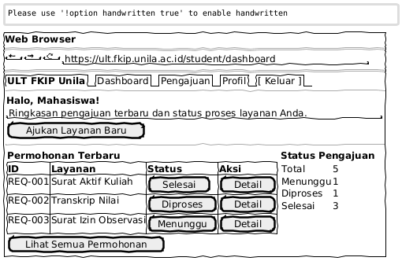
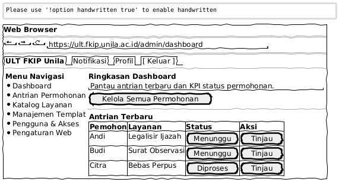

Preview Rancangan Wireframe (Sketchy Style)
Berikut adalah hasil desain low-fidelity wireframe bergaya sketsa sesuai dengan referensi Anda, yang merepresentasikan 3 format layout utama dari Web ULT FKIP Unila.
1. Wireframe Beranda Utama (Public Portal)

2. Wireframe Dashboard Mahasiswa (Student Portal)

3. Wireframe Dashboard Admin (Admin Portal)
